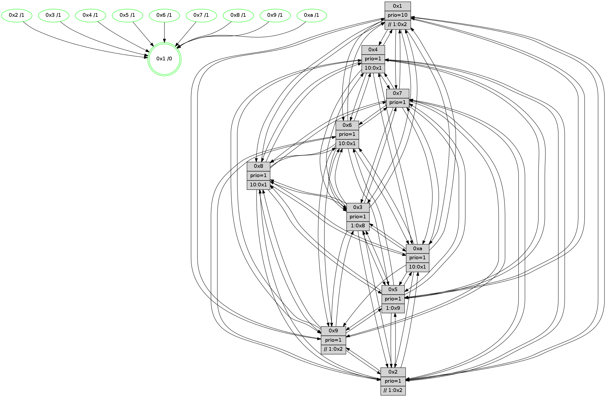

>> << IDX [start] -100 -25 -5 +0 +5 +25 +100 [745.212376118]
 Previous packets
----------------------------------------------------------------------
740.483588 beacon01(faad) #0 coord=01,02,03,04,05,06,07,0a,09,08 cycle=688.0ms assoc
-- color-indic=1 64 f7 08
740.493571 beacon02(faad) #0 coord=01,02,03,04,05,06,07,0a,09,08 cycle=688.0ms assoc 64 64 39
740.503571 beacon03(faad) #0 coord=01,02,03,04,05,06,07,0a,09,08 cycle=688.0ms assoc 64 1e 74
740.513570 beacon04(faad) #0 coord=01,02,03,04,05,06,07,0a,09,08 cycle=688.0ms assoc 64 69 9e
740.523571 beacon05(faad) #0 coord=01,02,03,04,05,06,07,0a,09,08 cycle=688.0ms assoc 64 13 d3
740.533571 beacon06(faad) #0 coord=01,02,03,04,05,06,07,0a,09,08 cycle=688.0ms assoc 64 9d 04
740.543571 beacon07(faad) #0 coord=01,02,03,04,05,06,07,0a,09,08 cycle=688.0ms assoc 64 e7 49
740.553576 beacon0a(faad) #0 coord=01,02,03,04,05,06,07,0a,09,08 cycle=688.0ms assoc 64 96 42
740.563575 beacon09(faad) #0 coord=01,02,03,04,05,06,07,0a,09,08 cycle=688.0ms assoc 64 18 95
740.573577 beacon08(faad) #0 coord=01,02,03,04,05,06,07,0a,09,08 cycle=688.0ms assoc 64 62 d8
740.587680 [Color(4) seq=104 @0:0 prio=1 >10.@1,1.@2,1.@3,1.@5]
740.591465 [Hello(5): seq=475 sym=7,6,4,3,1,9,8,10 sysInfo=hasWarning stat=7:3,5,13,5/6:1,6,11,7/4:14,15,0,5/3:2,14,1,6/1:2,8,13,1/9:7,1,4,0/8:11,11,2,5/10:1,3,1,0]
740.593919 [Color(3) seq=126 @0:0 prio=1 >1.@8,1.@9,1.@a]
740.595767 [Color(5) seq=128 @0:0 prio=1 >1.@9,1.@a]
740.597945 [Hello(8): seq=418 sym=5,2,3,4,7,6,9,10,1 sysInfo=hasWarning stat=5:6,2,10,8/2:0,10,1,2/3:0,10,5,9/4:8,6,8,6/7:4,5,12,7/6:15,12,7,8/9:0,10,10,5/10:11,3,9,6/1:7,9,13,0]
740.600648 [Hello(10): seq=407 sym=6,2,3,8,9,5,7,4,1 sysInfo=hasWarning stat=6:9,9,10,3/2:9,11,1,1/3:10,9,14,5/8:15,11,7,7/9:12,10,4,4/5:11,0,5,9/7:6,6,10,3/4:1,7,15,6/1:4,10,15,1]
740.603152 [Color(8) seq=141 @0:0 prio=1 >10.@1,1.@2,1.@3,1.@5]
740.605077 [Color(10) seq=106 @0:0 prio=1 >10.@1,1.@2,1.@3,1.@5]
740.609377 [Color(7) seq=105 @0:0 prio=1]
740.610918 [Hello(9): seq=418 sym=2,5,3,4,7,6,8,1 sysInfo=hasWarning stat=2:1,4,1,0/5:1,2,1,0/3:14,2,2,8/4:3,11,5,5/7:6,10,14,5/6:0,14,9,6/8:0,2,0,0/1:1,3,15,1]
740.614667 [Color(6) seq=128 @0:0 prio=1 >10.@1,1.@8,1.@9,1.@a]
740.616325 [Color(9) seq=123 @0:0 prio=1 >>1.@2,1.@3,1.@5]
740.620064 [Hello(2): seq=471 sym=4,5,7,6,3,9,8,10,1 sysInfo=hasWarning stat=4:9,5,5,4/5:4,10,6,1/7:13,1,14,5/6:13,8,11,6/3:13,2,2,3/9:3,4,2,0/8:0,0,3,5/10:9,6,4,5/1:1,6,8,1]
740.624165 [Color(2) seq=120 @0:0 prio=1 >>1.@2,1.@3,1.@5]
----------------------------------------------------------------------
741.271718 beacon01(faad) #0 coord=01,02,03,04,05,06,07,0a,09,08 cycle=688.0ms assoc
-- color-indic=1 64 33 06
741.281701 beacon02(faad) #0 coord=01,02,03,04,05,06,07,0a,09,08 cycle=688.0ms assoc 64 a0 37
741.291703 beacon03(faad) #0 coord=01,02,03,04,05,06,07,0a,09,08 cycle=688.0ms assoc 64 da 7a
741.301701 beacon04(faad) #0 coord=01,02,03,04,05,06,07,0a,09,08 cycle=688.0ms assoc 64 ad 90
741.311702 beacon05(faad) #0 coord=01,02,03,04,05,06,07,0a,09,08 cycle=688.0ms assoc 64 d7 dd
741.321702 beacon06(faad) #0 coord=01,02,03,04,05,06,07,0a,09,08 cycle=688.0ms assoc 64 59 0a
741.331702 beacon07(faad) #0 coord=01,02,03,04,05,06,07,0a,09,08 cycle=688.0ms assoc 64 23 47
741.341708 beacon0a(faad) #0 coord=01,02,03,04,05,06,07,0a,09,08 cycle=688.0ms assoc 64 52 4c
741.351709 beacon09(faad) #0 coord=01,02,03,04,05,06,07,0a,09,08 cycle=688.0ms assoc 64 dc 9b
741.361709 beacon08(faad) #0 coord=01,02,03,04,05,06,07,0a,09,08 cycle=688.0ms assoc 64 a6 d6
741.372658 [Hello(1): seq=384 sym=4,2,9,5,10,3,8,6,7 sysInfo=coloring-mode-on,ColoringModeRequestCalled stat=4:12,7,8,0/2:8,7,0,9/9:13,0,9,0/5:8,5,10,1/10:5,9,15,8/3:13,6,6,11/8:1,8,3,7/6:11,5,1,7/7:12,6,7,9]
741.378502 [Hello(3): seq=475 sym=1,7,6,2,4,8,9,10,5 sysInfo= stat=1:0,7,12,1/7:2,10,8,3/6:3,0,2,8/2:7,1,7,8/4:15,6,5,5/8:0,0,8,3/9:5,9,13,6/10:9,3,10,6/5:15,1,7,7]
741.381502 [Hello(4): seq=475 sym=5,7,6,2,3,9,8,10,1 sysInfo= stat=5:1,10,9,8/7:4,11,11,3/6:10,2,12,8/2:5,12,6,8/3:14,3,1,5/9:1,5,7,3/8:5,6,9,8/10:13,5,12,7/1:7,1,13,1]
----------------------------------------------------------------------
742.059850 beacon01(faad) #0 coord=01,02,03,04,05,06,07,0a,09,08 cycle=688.0ms assoc
-- color-indic=1 64 8f 03
742.069833 beacon02(faad) #0 coord=01,02,03,04,05,06,07,0a,09,08 cycle=688.0ms assoc 64 1c 32
742.079832 beacon03(faad) #0 coord=01,02,03,04,05,06,07,0a,09,08 cycle=688.0ms assoc 64 66 7f
742.089832 beacon04(faad) #0 coord=01,02,03,04,05,06,07,0a,09,08 cycle=688.0ms assoc 64 11 95
742.099833 beacon05(faad) #0 coord=01,02,03,04,05,06,07,0a,09,08 cycle=688.0ms assoc 64 6b d8
742.109833 beacon06(faad) #0 coord=01,02,03,04,05,06,07,0a,09,08 cycle=688.0ms assoc 64 e5 0f
742.119834 beacon07(faad) #0 coord=01,02,03,04,05,06,07,0a,09,08 cycle=688.0ms assoc 64 9f 42
742.129838 beacon0a(faad) #0 coord=01,02,03,04,05,06,07,0a,09,08 cycle=688.0ms assoc 64 ee 49
742.139838 beacon09(faad) #0 coord=01,02,03,04,05,06,07,0a,09,08 cycle=688.0ms assoc 64 60 9e
742.149838 beacon08(faad) #0 coord=01,02,03,04,05,06,07,0a,09,08 cycle=688.0ms assoc 64 1a d3
742.163981 [Color(3) seq=127 @0:0 prio=1 >1.@8,1.@9,1.@a]
742.165746 [Hello(2): seq=472 sym=4,5,7,6,3,9,8,10,1 sysInfo=hasWarning stat=4:10,6,5,4/5:4,10,6,1/7:14,1,14,5/6:13,8,11,6/3:14,2,2,3/9:3,4,2,0/8:0,0,3,5/10:9,6,4,5/1:2,6,8,1]
742.168374 [Color(1) seq=156 @0:0 prio=10 >>1.@2,1.@3,1.@5]
742.170149 [Color(2) seq=121 @0:0 prio=1 >>1.@2,1.@3,1.@5]
742.171770 [Hello(8): seq=419 sym=5,2,3,4,7,6,9,10,1 sysInfo=hasWarning stat=5:6,2,10,8/2:1,11,1,2/3:1,10,5,9/4:9,6,8,6/7:4,6,12,7/6:0,13,7,8/9:1,11,10,5/10:11,4,9,6/1:8,9,13,0]
742.174338 [Color(7) seq=106 @0:0 prio=1]
742.176117 [Color(6) seq=129 @0:0 prio=1 >10.@1,1.@8,1.@9,1.@a]
742.180554 [Hello(5): seq=476 sym=7,6,4,3,1,9,8,10,2 sysInfo=hasWarning stat=7:4,6,13,5/6:1,7,11,7/4:15,0,0,5/3:3,14,1,6/1:3,8,13,1/9:8,2,4,0/8:12,12,2,5/10:2,4,1,0/2:0,1,0,0]
742.183239 [Hello(9): seq=419 sym=2,5,3,4,7,6,8,1 sysInfo=hasWarning stat=2:2,5,1,0/5:1,2,1,0/3:15,2,2,8/4:4,12,5,5/7:6,10,14,5/6:1,14,9,6/8:0,2,0,0/1:2,3,15,1]
742.185603 [Color(5) seq=129 @0:0 prio=1 >1.@9,1.@a]
742.187688 [Color(9) seq=124 @0:0 prio=1 >>1.@2,1.@3,1.@5]
742.191115 [Hello(10): seq=408 sym=6,2,3,8,9,5,7,4,1 sysInfo=hasWarning stat=6:9,10,10,3/2:10,12,1,1/3:11,9,14,5/8:15,11,7,7/9:13,11,4,4/5:11,0,5,9/7:7,7,10,3/4:2,7,15,6/1:5,10,15,1]
742.195873 [Color(10) seq=107 @0:0 prio=1 >10.@1,1.@2,1.@3,1.@5]
----------------------------------------------------------------------
742.847980 beacon01(faad) #0 coord=01,02,03,04,05,06,07,0a,09,08 cycle=688.0ms assoc
-- color-indic=1 64 1b da
742.857964 beacon02(faad) #0 coord=01,02,03,04,05,06,07,0a,09,08 cycle=688.0ms assoc 64 88 eb
742.867963 beacon03(faad) #0 coord=01,02,03,04,05,06,07,0a,09,08 cycle=688.0ms assoc 64 f2 a6
742.877964 beacon04(faad) #0 coord=01,02,03,04,05,06,07,0a,09,08 cycle=688.0ms assoc 64 85 4c
742.887963 beacon05(faad) #0 coord=01,02,03,04,05,06,07,0a,09,08 cycle=688.0ms assoc 64 ff 01
742.897963 beacon06(faad) #0 coord=01,02,03,04,05,06,07,0a,09,08 cycle=688.0ms assoc 64 71 d6
742.907964 beacon07(faad) #0 coord=01,02,03,04,05,06,07,0a,09,08 cycle=688.0ms assoc 64 0b 9b
742.917968 beacon0a(faad) #0 coord=01,02,03,04,05,06,07,0a,09,08 cycle=688.0ms assoc 64 7a 90
742.927968 beacon09(faad) #0 coord=01,02,03,04,05,06,07,0a,09,08 cycle=688.0ms assoc 64 f4 47
742.937968 beacon08(faad) #0 coord=01,02,03,04,05,06,07,0a,09,08 cycle=688.0ms assoc 64 8e 0a
742.949196 [Hello(4): seq=476 sym=5,7,6,2,3,9,8,10,1 sysInfo= stat=5:2,11,9,8/7:4,11,11,3/6:10,2,12,8/2:5,12,6,8/3:14,3,1,5/9:2,6,7,3/8:5,6,9,8/10:14,6,12,7/1:7,1,13,1]
742.954107 [Hello(7): seq=476 sym=2,3,5,6,4,8,9,10,1 sysInfo=hasWarning stat=2:9,6,14,9/3:6,10,10,9/5:7,8,13,12/6:13,9,12,3/4:3,2,6,0/8:1,2,13,5/9:0,2,12,8/10:7,3,14,8/1:1,4,12,1]
742.960915 [Hello(3): seq=476 sym=1,7,6,2,4,8,9,10,5 sysInfo= stat=1:0,8,13,1/7:2,11,8,3/6:3,1,2,8/2:7,2,7,8/4:0,6,5,5/8:1,1,8,3/9:6,10,13,6/10:10,4,10,6/5:0,2,7,7]
742.965016 [STC(3)->1 #0.73 tree-change,inconsistent-stability,stable,to-color d=1]
742.968797 [Hello(6): seq=476 sym=2,3,5,4,7,9,8,10,1 sysInfo= stat=2:2,10,1,7/3:7,9,8,7/5:10,6,9,10/4:10,10,7,0/7:1,11,7,1/9:13,10,9,6/8:10,9,10,6/10:1,4,1,7/1:8,5,9,1]
----------------------------------------------------------------------
743.636114 beacon01(faad) #0 coord=01,02,03,04,05,06,07,0a,09,08 cycle=688.0ms assoc
-- color-indic=1 64 a7 df
743.646096 beacon02(faad) #0 coord=01,02,03,04,05,06,07,0a,09,08 cycle=688.0ms assoc 64 34 ee
743.656096 beacon03(faad) #0 coord=01,02,03,04,05,06,07,0a,09,08 cycle=688.0ms assoc 64 4e a3
743.666098 beacon04(faad) #0 coord=01,02,03,04,05,06,07,0a,09,08 cycle=688.0ms assoc 64 39 49
743.676096 beacon05(faad) #0 coord=01,02,03,04,05,06,07,0a,09,08 cycle=688.0ms assoc 64 43 04
743.686096 beacon06(faad) #0 coord=01,02,03,04,05,06,07,0a,09,08 cycle=688.0ms assoc 64 cd d3
743.696097 beacon07(faad) #0 coord=01,02,03,04,05,06,07,0a,09,08 cycle=688.0ms assoc 64 b7 9e
743.706102 beacon0a(faad) #0 coord=01,02,03,04,05,06,07,0a,09,08 cycle=688.0ms assoc 64 c6 95
743.716102 beacon09(faad) #0 coord=01,02,03,04,05,06,07,0a,09,08 cycle=688.0ms assoc 64 48 42
743.726103 beacon08(faad) #0 coord=01,02,03,04,05,06,07,0a,09,08 cycle=688.0ms assoc 64 32 0f
743.740199 [Color(4) seq=106 @0:0 prio=1 >10.@1,1.@2,1.@3,1.@5]
743.741861 [Color(6) seq=130 @0:0 prio=1 >10.@1,1.@8,1.@9,1.@a]
743.744312 [Hello(10): seq=409 sym=6,2,3,8,9,5,7,4,1 sysInfo=hasWarning stat=6:10,10,10,3/2:10,12,1,1/3:12,10,15,5/8:15,11,7,7/9:13,11,4,4/5:11,0,5,9/7:8,7,10,3/4:2,7,15,6/1:5,10,15,1]
743.747131 [Hello(8): seq=420 sym=5,2,3,4,7,6,9,10,1 sysInfo=hasWarning stat=5:7,3,10,8/2:1,11,1,2/3:2,11,6,9/4:9,6,8,6/7:5,6,12,7/6:1,13,7,8/9:2,12,10,5/10:12,5,9,6/1:8,9,13,0]
743.750013 [Color(1) seq=157 @0:0 prio=10 >>1.@2,1.@3,1.@5]
743.751848 [Color(7) seq=107 @0:0 prio=1]
743.753536 [Hello(2): seq=473 sym=4,5,7,6,3,9,8,10,1 sysInfo=hasWarning stat=4:11,7,5,4/5:5,11,6,1/7:15,2,14,5/6:14,9,11,6/3:15,3,3,3/9:4,5,2,0/8:1,0,3,5/10:10,7,4,5/1:2,6,8,1]
743.756612 [Color(8) seq=143 @0:0 prio=1 >10.@1,1.@2,1.@3,1.@5]
743.758607 [Color(10) seq=108 @0:0 prio=1 >10.@1,1.@2,1.@3,1.@5]
743.760668 [Color(2) seq=122 @0:0 prio=1 >>1.@2,1.@3,1.@5]
743.762383 [Color(3) seq=128 @0:0 prio=1 >1.@8,1.@9,1.@a]
743.764862 [Hello(5): seq=477 sym=7,6,4,3,1,9,8,10,2 sysInfo=hasWarning stat=7:5,6,13,5/6:2,7,11,7/4:0,0,0,5/3:4,15,2,6/1:3,8,13,1/9:8,3,4,0/8:12,12,2,5/10:3,5,1,0/2:0,1,0,0]
743.769932 [Color(5) seq=130 @0:0 prio=1 >1.@9,1.@a]
743.771747 [Color(9) seq=125 @0:0 prio=1 >>1.@2,1.@3,1.@5]
----------------------------------------------------------------------
744.424245 beacon01(faad) #0 coord=01,02,03,04,05,06,07,0a,09,08 cycle=688.0ms assoc
-- color-indic=1 64 63 d1
744.434228 beacon02(faad) #0 coord=01,02,03,04,05,06,07,0a,09,08 cycle=688.0ms assoc 64 f0 e0
744.444227 beacon03(faad) #0 coord=01,02,03,04,05,06,07,0a,09,08 cycle=688.0ms assoc 64 8a ad
744.454227 beacon04(faad) #0 coord=01,02,03,04,05,06,07,0a,09,08 cycle=688.0ms assoc 64 fd 47
744.464229 beacon05(faad) #0 coord=01,02,03,04,05,06,07,0a,09,08 cycle=688.0ms assoc 64 87 0a
744.474227 beacon06(faad) #0 coord=01,02,03,04,05,06,07,0a,09,08 cycle=688.0ms assoc 64 09 dd
744.484229 beacon07(faad) #0 coord=01,02,03,04,05,06,07,0a,09,08 cycle=688.0ms assoc 64 73 90
744.494236 beacon0a(faad) #0 coord=01,02,03,04,05,06,07,0a,09,08 cycle=688.0ms assoc 64 02 9b
744.504233 beacon09(faad) #0 coord=01,02,03,04,05,06,07,0a,09,08 cycle=688.0ms assoc 64 8c 4c
744.514234 beacon08(faad) #0 coord=01,02,03,04,05,06,07,0a,09,08 cycle=688.0ms assoc 64 f6 01
744.525764 [Hello(4): seq=477 sym=5,7,6,2,3,9,8,10,1 sysInfo= stat=5:3,12,9,8/7:5,12,11,3/6:11,3,12,8/2:6,13,6,8/3:15,4,2,5/9:3,7,7,3/8:6,7,9,8/10:14,7,12,7/1:7,2,13,1]
744.529159 [Hello(1): seq=386 sym=4,2,9,5,10,3,8,6,7 sysInfo=coloring-mode-on,ColoringModeRequestCalled stat=4:13,8,8,0/2:9,9,0,9/9:14,2,9,0/5:10,7,10,1/10:6,11,15,8/3:15,7,7,11/8:2,9,3,7/6:12,6,1,7/7:13,8,7,9]
744.532619 [Hello(3): seq=477 sym=1,7,6,2,4,8,9,10,5 sysInfo= stat=1:0,8,13,1/7:2,11,8,3/6:4,1,2,8/2:7,2,7,8/4:0,6,5,5/8:1,1,8,3/9:6,11,13,6/10:10,4,10,6/5:1,3,7,7]
744.536286 [Hello(7): seq=477 sym=2,3,5,6,4,8,9,10,1 sysInfo=hasWarning stat=2:10,7,14,9/3:7,11,11,9/5:8,9,13,12/6:14,9,12,3/4:3,2,6,0/8:1,3,13,5/9:0,3,12,8/10:7,4,14,8/1:1,4,12,1]
744.543135 [Hello(6): seq=477 sym=2,3,5,4,7,9,8,10,1 sysInfo= stat=2:3,11,1,7/3:7,10,8,7/5:11,7,9,10/4:10,10,7,0/7:1,12,7,1/9:13,11,9,6/8:11,10,10,6/10:2,5,1,7/1:8,6,9,1]